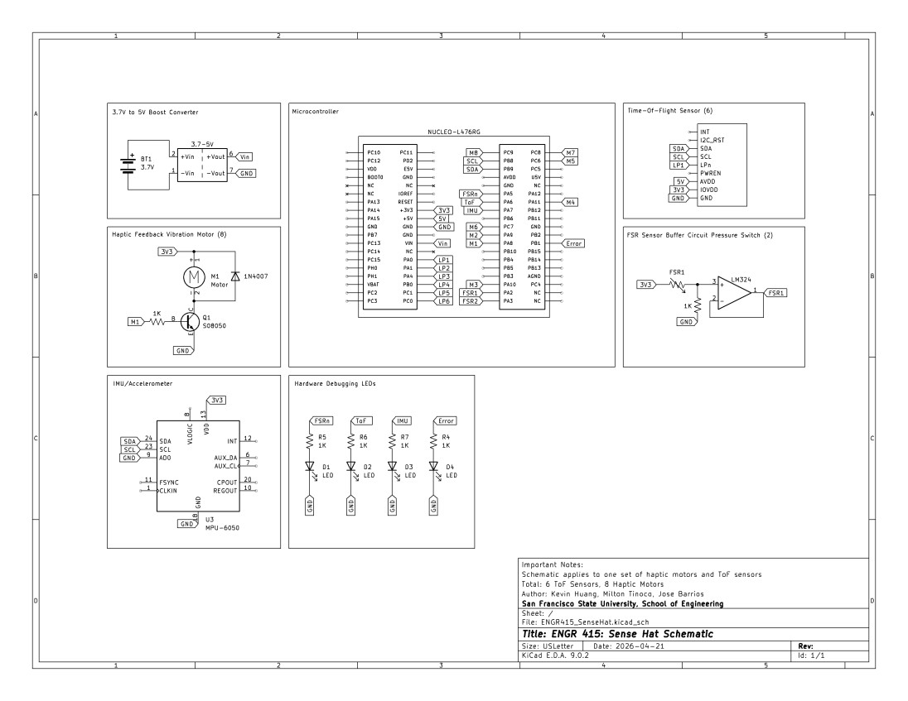

Electrical Design
The system is built around an STM32L476RG Nucleo board, selected for its faster architecture over typical Arduino boards, which was neeeded to simultaneously interpret 16+ data points from 6 ToF sensors and drive 8 independent haptic motor channels in real time.
The STM32 Nucleo board also supports I²C communications, which our ToF sensors depend on to transmit information back to our system. Motor control is handled via 8 GPIO PWM output pins, each driving an S8050 NPN transistor that amplifies the GPIO current levels, and a 1N4148 flyback diode in parallel for reverse voltage protection.

Power is supplied using three 3.7 V/3000 mAh Li-ion batteries boosted to 5 V by an MT3608 DC-DC converter. FSR pressure sensors on the brim's inner edge trigger hardware interrupts to wake or sleep the system, and a 1 kΩ pull-up resistor prevents signal jitter at each FSR node.
[Info about the accelerometer and the LED debugging lights here]
Power Budget
Average Load
Peak Load
Estimated Runtime — 3000 mAh Battery
| Usage Pattern | Estimated Runtime |
|---|---|
| Always On (100%) | 2.3 hrs |
| Active 50% | 4.6 hrs |
| Active 25% | 9 hrs |
| Active 10% | 23 hrs |
Bill of Materials — Electrical
| # | Part | Description | Vendor | Unit Price | Qty | Subtotal |
|---|---|---|---|---|---|---|
| 2 | VL53L5CX-SATEL | Multi-zone Time-of-Flight sensor | Digikey | $19.74 | 3 | $59.22 |
| 3 | USB Mini Pigtail Cable | Mini USB to 2-pin battery lead (2-Pack) | Amazon | $11.99 | 1 | $11.99 |
| 4 | 3.7 V 3000 mAh LiPo | Rechargeable lithium-polymer battery (4-Pack) | Amazon | $25.99 | 1 | $25.99 |
| 5 | MT3608 Boost Converter | 3.7 V → 5 V DC-DC step-up, 2 A peak (10-Pack) | Amazon | $6.99 | 1 | $6.99 |
| 7 | FSR Thin Film Pressure Sensor | 0.4 mm, 20 g–2 kg range (4-Pack) | Amazon | $11.99 | 1 | $11.99 |
| 8 | STM32L476RG | ARM Cortex-M4 Nucleo microcontroller | In-house | — | 1 | $0 |
| 10 | 1N4148 Diode | Flyback protection diode | In-house | — | 8 | $0 |
| 11 | 1 kΩ Resistor | Base resistor for NPN transistor | In-house | — | 8 | $0 |
| Total Project Cost | $157.15 | |||||